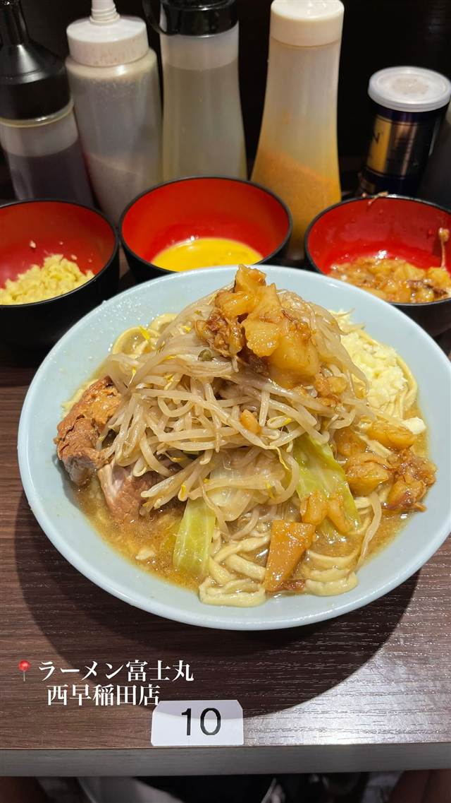

ラーメン · 二郎系(インスパイア) · 西早稲田
ラーメン富士丸 西早稲田店
ルーツは二郎直系、極太麺とブタかすアブラの二郎系
ラーメン富士丸 西早稲田店
ルーツは二郎直系の「ラーメン二郎赤羽店」。閉店後に屋号を「まるじろう」「○二郎」と変えながら現在の「富士丸」となった二郎系グループの一店で、西早稲田店は都内展開の4店舗目。硬めの極太麺とブタかす入りの甘辛いアブラが特徴。
TRIVIA
豆知識
- ルーツは今はなき「ラーメン二郎赤羽店」
- 屋号は「まるじろう」→「○二郎」を経て現在の「富士丸」に変遷した
REVIEWS
世間の評判
84.8ラーメンDB3.58食べログ
攻めた限定メニューと味の変化
- イカ墨や海老味噌など攻めた限定メニューを評価する声が多い
- フランチャイズ化で以前より丁寧な味にまとまったという声もある
- 限定メニューも含め豚の大きさやボリュームの多さに満足する声もある
ラーメンデータベース 口コミ94件・最新 2026-08
| 創業 | 西早稲田店は2023年2月開業 |
|---|---|
| 系譜 | ルーツは二郎直系の「ラーメン二郎赤羽店」。2017年の閉店後に屋号を「らーめんまるじろう」「ラーメン○二郎」と変えながら現在の「富士丸」に。西早稲田店は神谷本店・西新井大師店などに続くグループ4店舗目 |
| 看板 | 二郎系ラーメン（ブタかす入りアブラ、極太麺） |
| こだわり | 自家製の平打ちストレート太麺を硬めに茹でたゴワゴワ食感、微乳化スープは甘辛く濃厚、ブタかす入りのアブラが名物 |
| どこから | 都心 |
| 営業時間 | 月〜日 11:00-15:00、17:00-21:00 |
| 予算 | 昼 ¥1,000～¥1,999 夜 ¥1,000～¥1,999 |
| 定休日 | 年末年始のみ休業 |
| 予約 | 予約不可 |
| 場所 | 西早稲田駅 東京都新宿区西早稲田 |
| メモ | ヤサイ・アブラはデフォルトで入り、ニンニクなどは追加コールが必要。年中無休、11-15時／17-21時営業 |
食べたもの：二郎系ラーメン
ひとりで入りやすい
OFFICIAL
店からの知らせ
その日の限定や臨時の休みは、店のXに出ます。
NEARBY
近い店・同じ系統の店
-
 ★
二郎系(インスパイア) 新小岩駅
Hi-Fat Noodle BUTCHER'S
「脂と肉を武器にする」がコンセプトの二郎系2号店
昼 ¥1,000～¥1,999 夜 ¥1,000～¥1,999
★
二郎系(インスパイア) 新小岩駅
Hi-Fat Noodle BUTCHER'S
「脂と肉を武器にする」がコンセプトの二郎系2号店
昼 ¥1,000～¥1,999 夜 ¥1,000～¥1,999
-
 ★
二郎系(インスパイア) 高田馬場駅(早稲田口)
ラーメン 池田屋 高田馬場店
京都一乗寺発の二郎系が東京初進出、豚の旨味濃厚な一杯
昼 ¥1,000～¥1,999 夜 ¥1,000～¥1,999
★
二郎系(インスパイア) 高田馬場駅(早稲田口)
ラーメン 池田屋 高田馬場店
京都一乗寺発の二郎系が東京初進出、豚の旨味濃厚な一杯
昼 ¥1,000～¥1,999 夜 ¥1,000～¥1,999
-
 ★
二郎系(インスパイア) 東北沢駅／駒場東大前駅
千里眼（センリガン）
夏季限定の冷やし中華も人気の二郎系インスパイア
昼 ～¥999 夜 ～¥999
★
二郎系(インスパイア) 東北沢駅／駒場東大前駅
千里眼（センリガン）
夏季限定の冷やし中華も人気の二郎系インスパイア
昼 ～¥999 夜 ～¥999
-
 ★
二郎系(インスパイア) 大山
自家製麺 No11
富士丸出身の店主が繰り出す350g極太麺の二郎系
夜 ¥1,000～¥1,999
★
二郎系(インスパイア) 大山
自家製麺 No11
富士丸出身の店主が繰り出す350g極太麺の二郎系
夜 ¥1,000～¥1,999
-
 ★
二郎系(インスパイア) 東大前
ラーメン用心棒 本号
千里眼の系譜を継ぐ、濃厚豚骨醤油と極太麺のまぜそば
昼 ～¥999 夜 ¥1,000～¥1,999
★
二郎系(インスパイア) 東大前
ラーメン用心棒 本号
千里眼の系譜を継ぐ、濃厚豚骨醤油と極太麺のまぜそば
昼 ～¥999 夜 ¥1,000～¥1,999
-
 ★
二郎系(インスパイア) 大井町
ザ・ラーメン スモールアックス
二郎系なのに麺量250gと少なめで食べやすい一杯
昼 ～¥999 夜 ～¥999
★
二郎系(インスパイア) 大井町
ザ・ラーメン スモールアックス
二郎系なのに麺量250gと少なめで食べやすい一杯
昼 ～¥999 夜 ～¥999